Como funciona um processo seletivo por sorteio no GPS, contado em treze capítulos na ordem em que as coisas acontecem. Cada capítulo responde à pergunta de quem conduz, mostra a tela real e diz o que o candidato vê do outro lado.
Os candidatos aparecem como C1 a C11: o número que cada um recebeu na relação geral congelada. Não é a posição no sorteio. As telas foram capturadas numa cópia do banco de 05/11 em que nomes, e-mails, CPFs e protocolos foram trocados por fictícios; os operadores aparecem pelo papel (gestor.a, publicador.a). Por isso os resumos criptográficos exibidos nas telas não conferem com o conteúdo trocado: são os do original.
Configura, publica, congela, busca a semente, sorteia, divulga, corta, apura, convoca, confere, registra o desfecho e encerra. São pelo menos quatro papéis diferentes no caminho.
Encontra a seleção, entra com um código enviado ao e-mail, escolhe a modalidade, envia, confere a relação e o resultado, é chamado ou não, e acompanha o que a comissão registrou.
O GPS não tem um "status do processo" que avança de casa em casa. Tem o estado do Edital, o estado de cada inscrição e, para cada lista, uma sequência de atos imutáveis em que cada um exige o anterior. As setas abaixo são essas dependências, conferidas no código.
Nenhuma pessoa conduz o processo inteiro sozinha, e o GPS impede uma combinação: a mesma pessoa não pode elaborar, homologar e publicar o mesmo Edital. A presidência da comissão não é papel do sistema: vem do vínculo com a comissão de um Processo, e dá os mesmos poderes de condução que o papel Gestor.
| Papel no GPS | O que faz neste processo | Capítulos |
|---|---|---|
| Gestor | Cria o Processo e o Edital, constitui a comissão, conduz o sorteio (congela, observa, sorteia), corta, apura, convoca, registra desfechos e encerra. | 1, 4–8, 10–13 |
| Presidência da comissão | Os mesmos atos de condução do Gestor, só no Processo que preside. Não é papel: é vínculo. | 4–8, 10–12 |
| Elaborador | Compõe o Edital em nove etapas e propõe Retificações. É quem declara o concurso da Loteria. | 1, 2, 5 |
| Homologador | Confere e homologa o Edital e as Retificações, ou devolve. | 1 |
| Publicador | Publica o Edital, as Retificações e os resultados, e manda os avisos. Não abre corte nem ocupação. | 1, 9 |
| Membro alocado à conferência | Confere documentos da convocação no Perfil para o qual foi alocado. Não registra desfecho. | 11 |
| Formalização | Setor que recebe os documentos de quem foi aceito, só nos Editais em que foi designado. | 11, 13 |
| Exportador de matrículas | Gera o arquivo de importação para o Registro Acadêmico, que é outro sistema. | 11, 13 |
| Julgador de recursos · Auditor | Julga recursos; consulta a trilha. | 9, 13 |
| Candidato | Não tem papel na gestão: entra no portal público com um código enviado ao e-mail. | 3, 9, 10 |
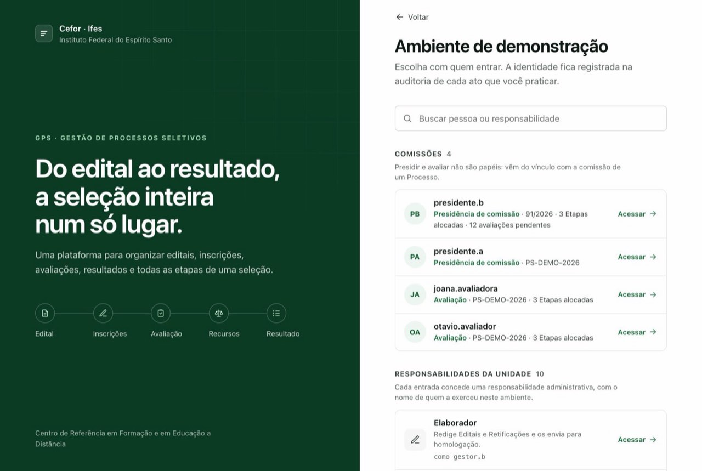
"Tenho um Edital para publicar. Como digo que serão seis vagas, que haverá reserva e que a ordem sai de sorteio?"
O processo nasce em duas mãos. O Gestor cria o Processo Seletivo e, junto, o primeiro Edital; os dois nascem "em elaboração". A Unidade não é digitada: é a do próprio gestor. Depois o Elaborador compõe o Edital num assistente de nove etapas: identificação, perfis, cronograma, etapas, classificação, inscrição, anexos, conteúdo e revisão.
Três conceitos aparecem aqui e acompanham o resto do guia.
Perfil de vaga é a oferta: um curso num polo. O Edital 35 tem dois, PEEI-CEFOR e PEEI-VITÓRIA, cada um com 6 vagas imediatas. Este guia acompanha o primeiro.
Modalidades são livres: o GPS não conhece "AC, PcD e PPI" de fábrica. O Elaborador as cria e diz qual delas é a ampla concorrência. No Edital 35 são três: AC, apontada como ampla, PcD e PPI. O quadro de vagas tem uma linha geral, que é a ampla (4 vagas), e uma linha por modalidade reservada (PcD 1, PPI 1). A modalidade apontada como ampla não tem linha própria.
Marco classificatório é o ponto do Perfil em que uma ordem é produzida. No Edital 35 há um, "Classificação final", com a ordem por sorteio. É no marco que se declaram o método do sorteio e a regra de corte (capítulos 5 e 8).
Pronto, o Edital é submetido, homologado por outra pessoa e publicado pelo Publicador, que escolhe a autoridade signatária. Publicar congela tudo numa versão: daí em diante, mudar é Retificação, com o mesmo percurso de três passos.
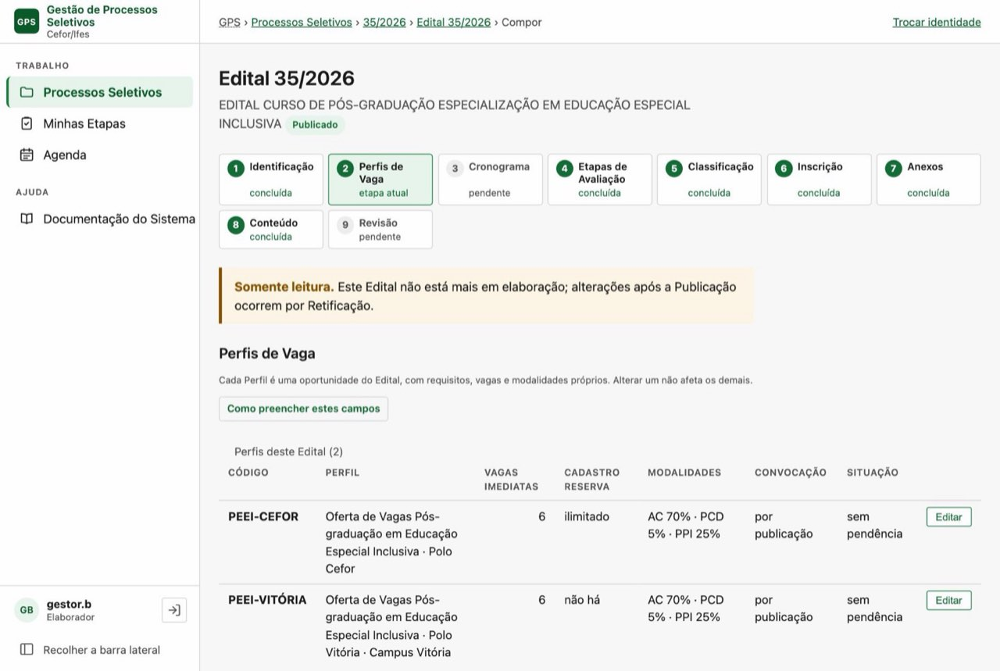
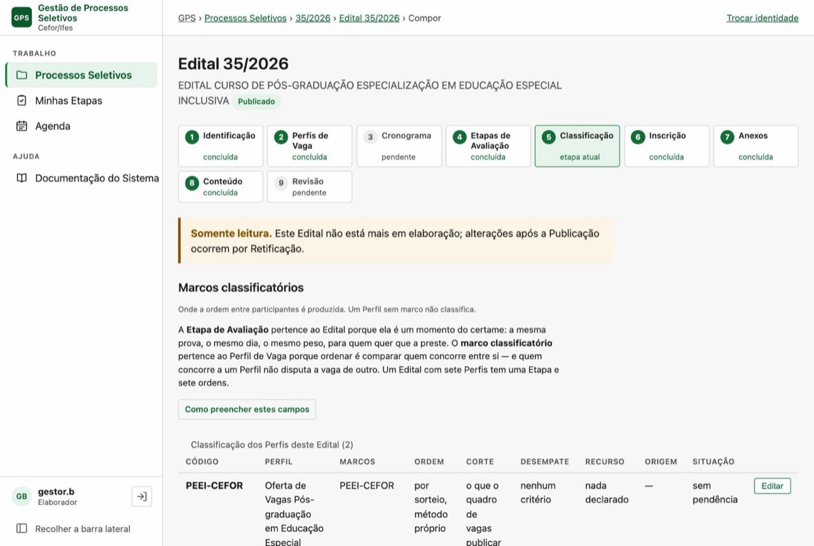
No Edital 35 publicado, o campo "Empate na última posição" da regra de corte está vazio, e os textos de normalização e de substituição da semente dizem só "Site". A validação de hoje exige o desfecho de empate (cut_rule_sem_desfecho_de_empate); não verifiquei se ela já existia em 28/10. A conferir
"Quais datas preciso configurar, e o sistema faz alguma coisa sozinho quando elas chegam?"
O cronograma é uma lista de eventos com tipo em texto livre, início e, opcionalmente, fim. O GPS não sabe o que é "Sorteio" ou "Convocação" no cronograma: ele só lê três ligações estruturais. A primeira é qual evento é o período de inscrições. A segunda é a Etapa de avaliação ligada a um evento. A terceira é a cópia do instante de um evento para o campo "quando a extração acontece" do sorteio, e cópia quer dizer que mudar o evento depois não muda o sorteio.
Daí a regra prática: só o período de inscrições controla operações. Ele abre e fecha o recebimento, e enquanto está aberto a relação do sorteio não pode ser congelada. Todo o resto são datas para o público, que o operador cumpre com atos.
A distinção que importa é entre data prevista, no cronograma, e instante do ato, gravado quando alguém age: relação congelada em 03/11 12h05, semente observada em 05/11 09h23, sorteio em 05/11 14h36. Ninguém precisa fazer o ato na hora do evento, e o GPS não avisa quando um evento passa sem o ato.
O único processo que roda sozinho por tempo é o envio dos avisos aos candidatos (despachar_avisos), a cada minuto em produção. Nada abre, fecha, sorteia ou convoca por data.
| Evento do cronograma do Edital 35 (horário de Brasília) | Controla alguma operação? | O ato real |
|---|---|---|
| Publicação · 27/10 15h16 | Não | Publicado em 28/10 10h53 |
| Inscrições · 27/10 15h16 a 28/10 12h28 | Sim: abre e fecha o recebimento; enquanto aberto, impede congelar a relação | 11 enviadas entre 10h56 e 11h09 de 28/10 |
| Sorteio · 05/11 09h30 | Não. O que conta é o concurso e o instante declarados no método | Semente observada 09h23; sorteio 14h36 |
| Resultado (cinco eventos) · 27/10 e 03/11 | Não | Resultados preliminares 05/11 14h41–15h15 |
| Recursos · 03/11 11h30 a 12h00 | Não. O prazo recursal conta da publicação do resultado, e o marco não declarou recurso | Nenhum |
| Convocação · 03/11 12h20 | Não. O vencimento é informado em cada convocação | Nenhuma no banco real |
O cronograma vigente marca resultados, recursos e convocação em 03/11, antes do sorteio de 05/11, e um "Resultado" em 27/10, antes da publicação. O GPS não acusa a incoerência, porque essas datas não ligam a nada. Comprovado Melhoria
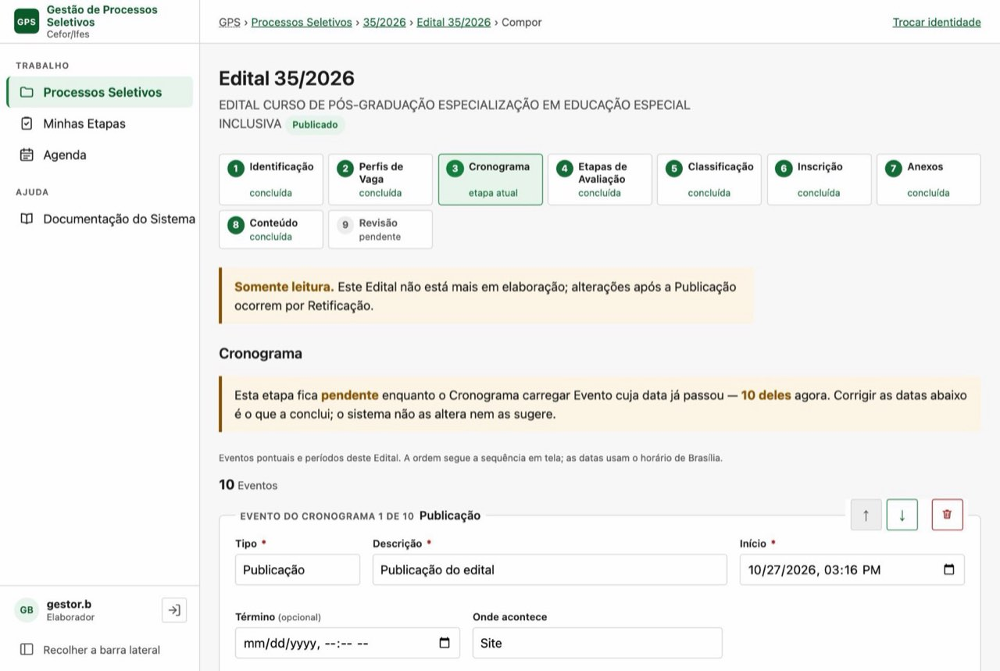
"Como sei quem vai entrar no sorteio?"
O candidato entra no portal sem senha: digita o e-mail, recebe um código de seis dígitos válido por 10 minutos, informa nome e CPF no primeiro acesso e escolhe a vaga. Na tela da inscrição escolhe a modalidade, envia os documentos pedidos na inscrição (no Edital 35, um documento de identificação), aceita duas declarações e envia.
A inscrição tem só dois estados: rascunho e submetida. Depois de enviada, nada nela muda, nem a modalidade. Recebe um protocolo aleatório (INS-2026-…), sem sequência.
Não existe "habilitada" nem "indeferida" na inscrição. Quando o Edital não declara uma etapa de habilitação antes do sorteio, que é o caso do 35, toda inscrição submetida entra no sorteio. A tela e a página pública chamam esse conjunto de "habilitados" mesmo assim.
Cada modalidade gera uma lista. A ampla reúne todos os inscritos do Perfil; cada modalidade reservada reúne quem a marcou. Por isso o cotista concorre nas duas ao mesmo tempo.
| Lista | Quem entra no Edital 35 | Quantos |
|---|---|---|
| Ampla (linha geral) | C1 C2 C3 C4 C5 C6 C7 C8 C9 C10 C11 | 11 |
| PcD | C6 C9 | 2 |
| PPI | C2 C7 C11 | 3 |
| AC, só quem marcou AC | Sorteada em 05/11, mas nenhuma vaga sai dela. Desde a spec 122 o GPS não a cria mais. | 6 |
Uma 12ª inscrição ficou em rascunho e nunca foi enviada. Ela não entra em lista nenhuma.
"As inscrições fecharam. Por que ainda preciso congelar alguma coisa?"
Encerrar as inscrições impede que entre gente nova. Congelar a relação é outra coisa: é publicar, para cada lista, quem participa do sorteio e com que número, num registro que não muda mais. Cada pessoa recebe um número do sorteio, de 1 a N, e o conjunto ganha um resumo criptográfico, que muda se alguém for incluído, retirado ou renumerado.
O congelamento tem de acontecer antes da extração da Loteria. Assim ninguém pode montar a lista já sabendo o resultado. A Loteria Federal publica só a data da extração, então o GPS considera que ela aconteceu "não antes de 00h00 daquele dia", e a relação precisa ter sido congelada antes disso.
O número segue a ordem do protocolo, em ordem alfabética. Como o protocolo é aleatório, o número não reflete a ordem de chegada, embora a frase publicada diga "ordem crescente de protocolo".
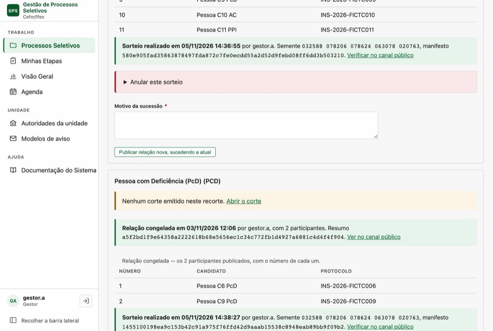
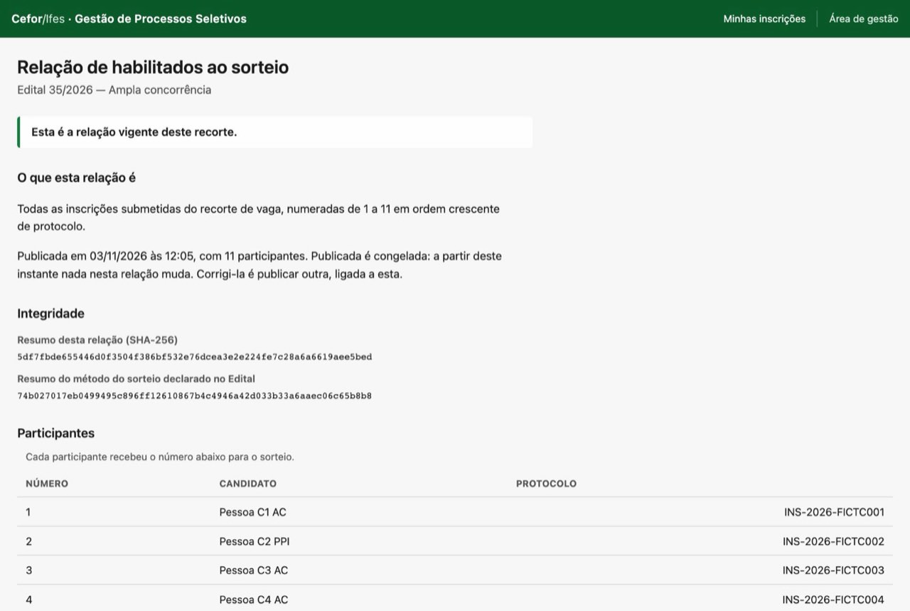
"O GPS busca os números na Caixa sozinho? E se a Caixa estiver fora do ar?"
Quatro palavras, na ordem em que acontecem. O concurso é o número que o Edital declara: 6115. A extração é o sorteio da Caixa, em 04/11. A ocorrência da fonte é o registro, no GPS, dos números que a Caixa publicou. A semente é a sequência que entra na conta, normalizada desses números: 032588 078206 078624 063078 020763.
Quem define o concurso é o Elaborador, na composição, e só o número. O instante da extração também é digitado ou copiado de um evento do cronograma: o GPS não o busca. Mudar depois de publicado é Retificação.
O GPS fala com a Caixa em dois momentos. A conferência só pergunta se o concurso já foi realizado: acontece na submissão, na publicação, na Retificação, no congelamento e no botão "Conferir na Caixa". A observação busca os números: é o botão "Observar a ocorrência 6115 na fonte", e só acontece quando alguém clica. Não há rotina automática.
Se a Caixa não responde, nada é gravado e o próximo passo é clicar de novo; o GPS tenta três vezes por clique. Se a Caixa responde sem os números, o GPS registra a indisponibilidade e pode passar ao concurso seguinte, pela regra de substituição que o Edital declarou. Não existe digitar os números à mão. A spec 021 proíbe semente digitada, e o código não tem esse caminho.
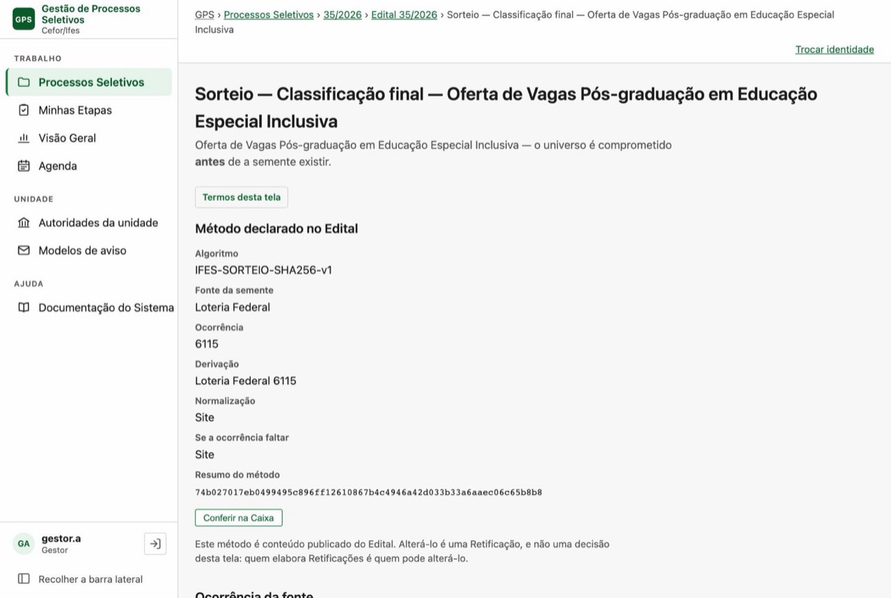
"Cliquei em sortear. Quantas vezes preciso fazer isso, e como confiro?"
O sorteio é um por lista. A observação da semente é uma só, compartilhada, mas cada lista tem o seu botão "Realizar o sorteio", que só aparece quando aquela lista tem relação congelada, a ocorrência foi observada e ainda não há sorteio.
A conta não tem nada de aleatório depois do congelamento. Para cada participante o GPS calcula um SHA-256 de cinco dados: um rótulo fixo, o resumo da relação, a lista, a semente e o número da pessoa. A ordem é a desses resultados, do menor para o maior. Por isso cada lista dá uma ordem diferente, e a mesma pessoa pode ter posições diferentes: C2 é 1ª na geral e 3ª na PPI.
Ao realizar, o GPS grava a ordem de todos os participantes (o sorteio não corta ninguém), a semente usada e o resumo do manifesto. A tela diz "Sorteio realizado… Falta publicar a classificação". Publicar é com o Publicador (cap. 9).
Qualquer pessoa pode conferir em /selecoes/sorteio/…/verificar. A página refaz cinco conferências a partir das entradas: a relação, o método, a semente, a ordem e o manifesto. Os quatro sorteios do Edital 35 foram refeitos fora do GPS no primeiro estudo, e conferem.
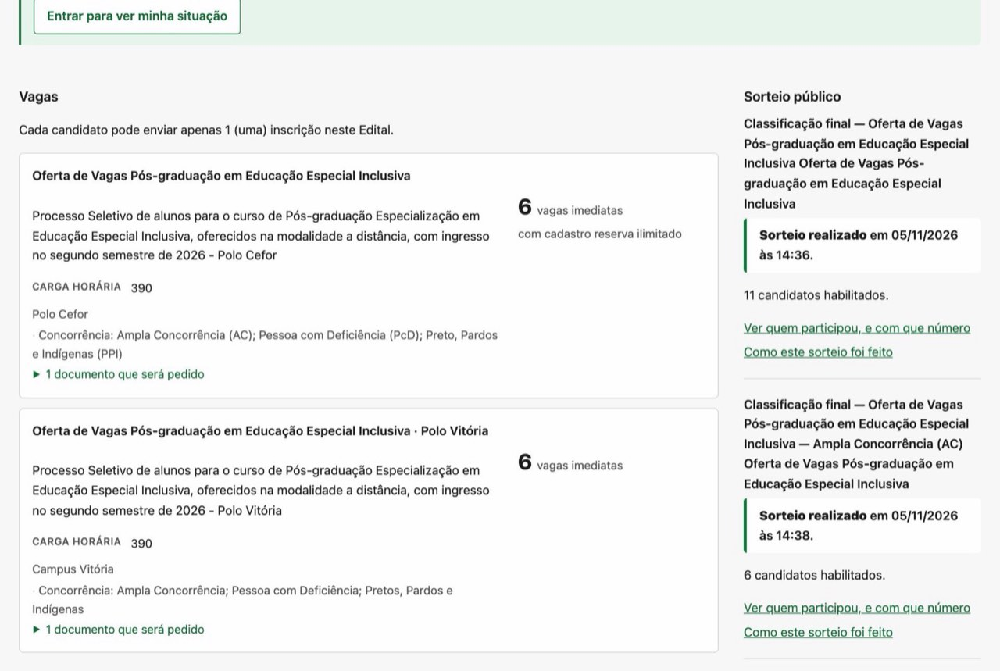
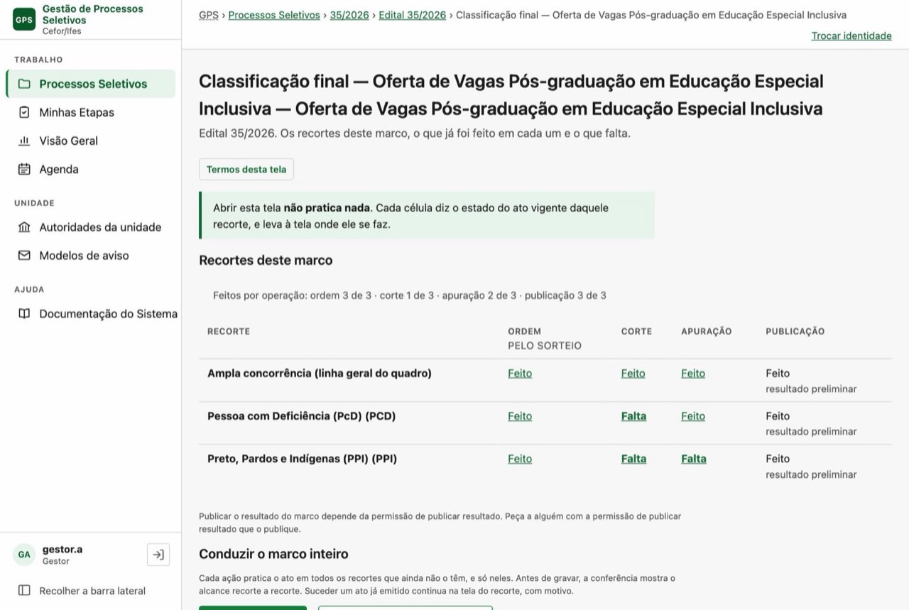
"C6 é 1ª na lista PcD. Ela fica com a vaga PcD?"
Não necessariamente. A ordem diz quem ficou em que posição; a distribuição diz qual vaga alcança cada pessoa. Ficar entre os quatro primeiros da ordem geral é estar dentro das vagas da ampla. C6 é 3ª na geral: está dentro das vagas da ampla e dentro da vaga PcD.
O Edital resolve: o cotista sorteado dentro das vagas das duas listas fica na ampla, e não é computado na reserva, "abrindo vaga para o próximo". Então C6 ocupa a Ampla 3, e a vaga PcD vai para C9. Aparecer em duas listas não dá duas vagas.
C7 é o caso contrário: 1º na PPI, mas 6º na geral, fora da ampla. Ele fica com a vaga PPI. C2 é PPI e está na ampla (1ª), mas é a 3ª na PPI e não alcançaria a reserva de qualquer forma.
No GPS, a distribuição não é um ato. Ela acontece na apuração da ocupação: a lista reservada desconta quem já ocupa pela ampla (cap. 8).
"O sorteio terminou. Por que ainda não posso convocar?"
Porque convocar exige uma apuração da ocupação, e a apuração conta sobre o corte. São dois atos por lista, nesta ordem.
O corte marca até que posição a lista avança. No Edital 35 o alvo vem do quadro de vagas (ampla 4, PcD 1, PPI 1), com 0 suplentes. Quem está dentro progride; quem está depois fica fora da faixa, o que não é eliminação. A tela calcula uma prévia sem gravar nada; "Emitir corte" é o ato, irreversível.
A apuração da ocupação conta, para cada lista: vagas publicadas, efetivas, ocupadas e "a ocupar". Titular é quem cabe nas primeiras vagas entre os que progridem; na lista reservada, sem contar quem já ocupa pela ampla. Suplente é quem progride além dos titulares.
Quando faltam ocupantes, a faixa seguinte continua a lista de onde a anterior parou, e quem ela alcança passa a progredir. As faixas de um corte formam uma geração. Emitir o corte de novo, com motivo, cria uma geração sucessora, que substitui todas as faixas da anterior.
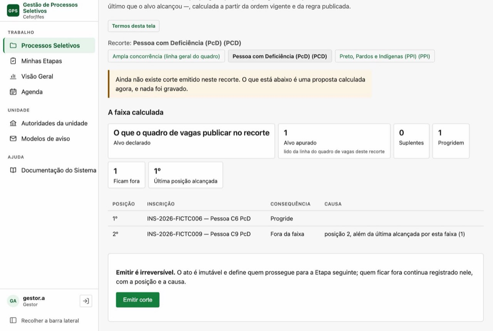
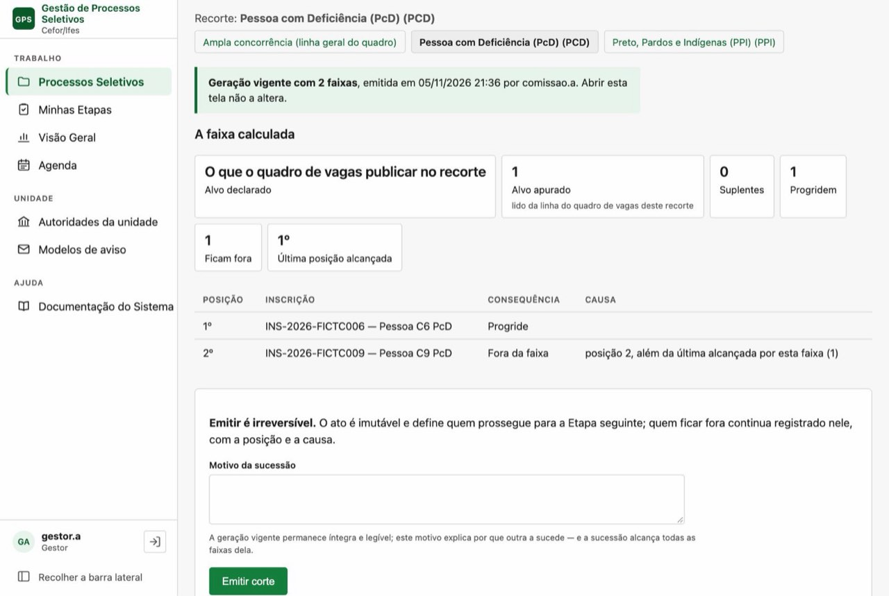
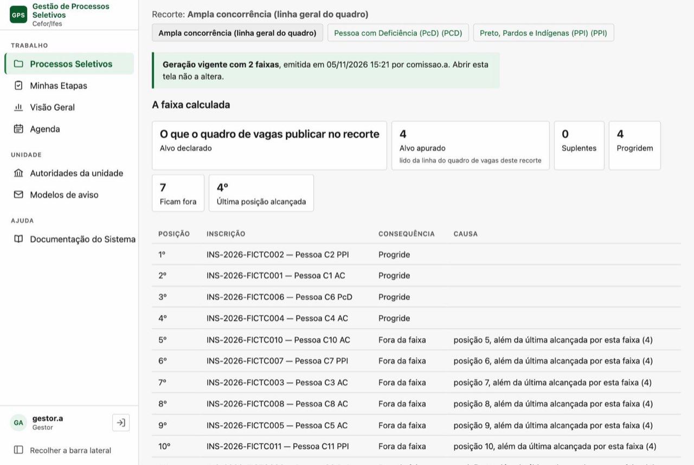
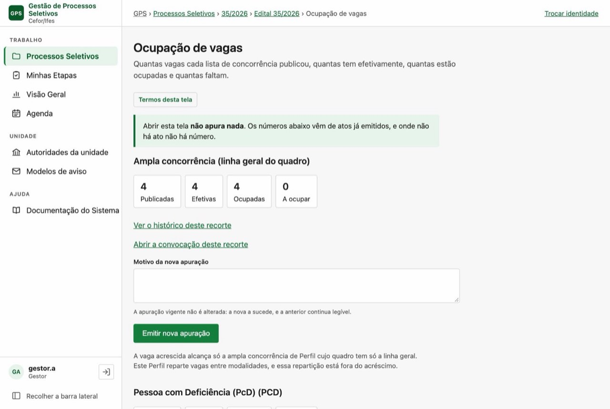
"O que eu publico, e o que o candidato fica sabendo?"
Três coisas ficam públicas em momentos diferentes. A relação sai quando se congela (cap. 4). A verificação do sorteio fica disponível quando se sorteia (cap. 6). O resultado é um ato próprio do Publicador, por lista, depois do sorteio.
Publicar tem duas fases. A prévia não grava nada e mostra se algo impede: ato sucedido, corte obsoleto, recurso pendente. A confirmação publica: o resultado fica público, cada participante vê a própria situação, e o ato não se despublica. A natureza é Resultado preliminar ou Resultado definitivo; o GPS não usa "final". A preliminar abre o prazo de recurso, quando o marco o declara; a definitiva só sai sem recurso pendente.
A divulgação não é pré-requisito de corte, apuração ou convocação: corre em paralelo. O contrário vale: um corte obsoleto impede publicar.
A página pública do resultado traz posição, candidato, protocolo e modalidade, e o selo "Esta ordem foi produzida por sorteio público". É a ordem do sorteio: a lista PcD publicada mostra C6 em 1º, sem dizer que ela ficou na ampla.
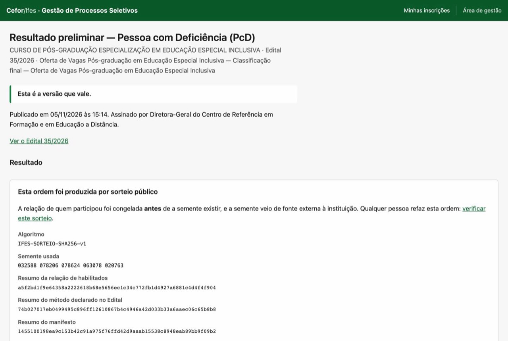
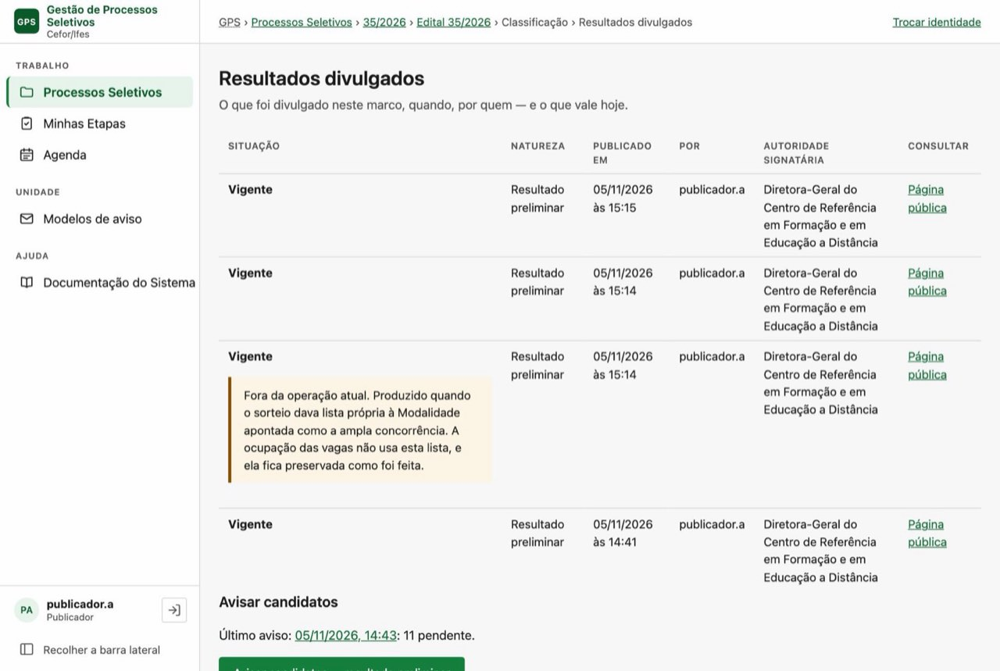
"Quem eu chamo, como ele fica sabendo, e o que ele precisa entregar?"
A tela de convocação de cada lista começa pelos números da apuração e oferece "Convocar os titulares num ato só": as pessoas que ocupam vaga pela apuração, do começo da fila. A espécie da chamada não é escolhida: titular é "para vaga inicial", suplente é "para vaga que vagou", indeferido é "para regularizar". O prazo vem de um evento do cronograma ou de uma data digitada; o GPS não calcula dias úteis.
Como o candidato fica sabendo depende do Edital. Com mensagem individual, o GPS envia um e-mail de texto simples que manda o candidato entrar no portal. Com publicação, que é o caso do Edital 35, o GPS não publica nada: o operador publica a lista fora do sistema e registra "onde e quando a lista foi publicada". O prazo de cada convocação só começa a correr a partir dessa comunicação.
Os documentos da convocação são os que o Edital declarou como pedidos "na convocação", por Perfil e modalidade. O candidato envia cada um na página da convocação, em PDF; não há botão de "concluir envio". O Edital 35 não pede documento na convocação, só na inscrição, e não declara Requerimento de Matrícula. Por isso, neste caso, a página do convocado é a versão simples. Visto no código, não exercitado
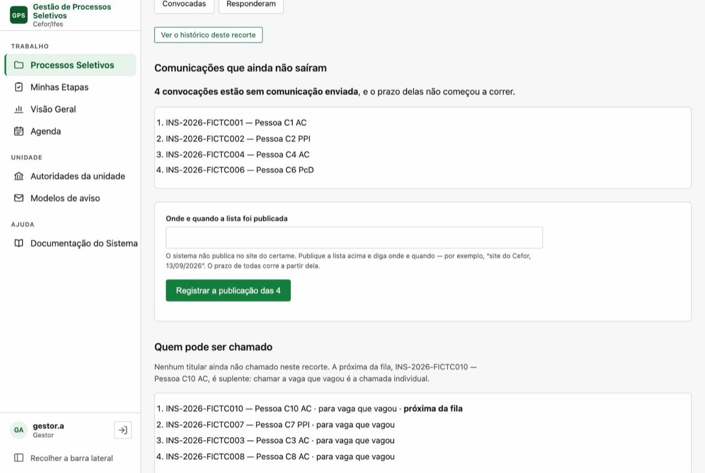
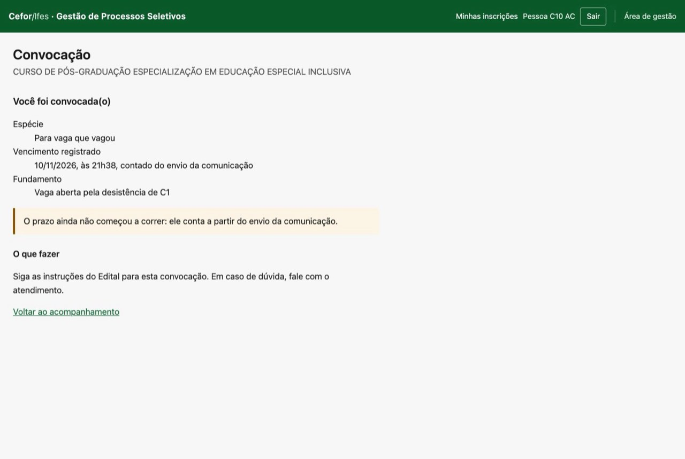
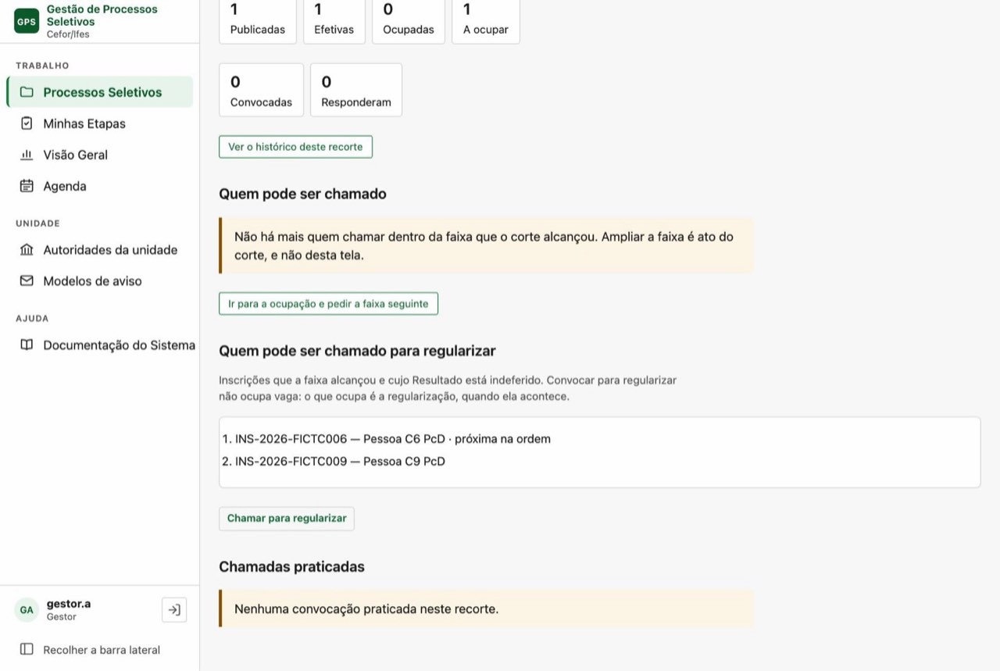
"Quando a vaga está garantida? Quando é matrícula?"
Quem confere documentos é o Gestor, a presidência ou o membro alocado à conferência daquele Perfil. Na página "Documentos da convocação", cada item recebe um de três resultados: Conforme ao exigido pelo Edital (só depois de abrir o arquivo), Pendente ou Não se aplica, os dois últimos com motivo, e o motivo vai ao candidato. Não há fila própria de conferência: o operador usa a lista "Chamadas praticadas", com uma ordenação opcional.
A decisão é o desfecho, registrado pelo Gestor ou pela presidência no cartão da chamada. Aceite e regularização só entram com todo documento obrigatório conferido. A conferência completa não gera o desfecho sozinha: a tela diz "Pronta para decidir", e alguém precisa registrar.
O aceite não é matrícula, e o próprio portal o diz: "Este registro não é matrícula, bolsa nem contrato". Quem tem aceite fica "apto para formalização". O setor de Formalização recebe os documentos, e o Exportador gera o arquivo para o Registro Acadêmico. A matrícula acontece fora do GPS.
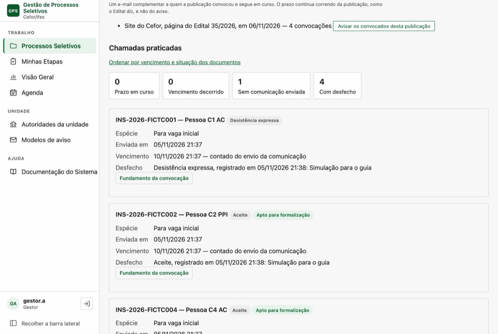
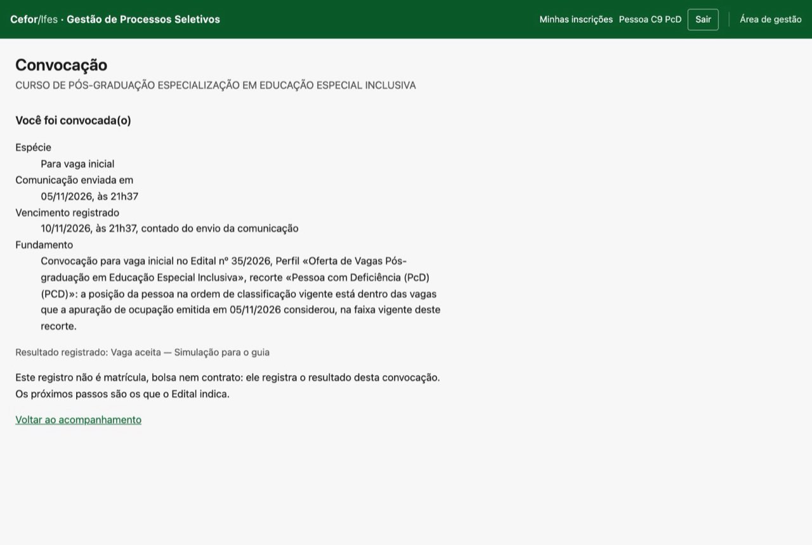
"C1 desistiu por e-mail. O que eu faço?"
O candidato não tem botão de desistir. A comissão registra o desfecho "Desistência expressa", com fundamento. Se a pessoa simplesmente não responde, o prazo vencido não decide nada sozinho: depois do vencimento, a comissão registra "Não atendimento à convocação", uma a uma ou em lote ("Não atendimento das convocações vencidas").
Com o desfecho, a ocupação é refeita sozinha: a ampla caiu de 4 de 4 para 3 de 4. A fila aponta a próxima, C10, que já estava alcançada pela faixa 5º–8º; sem essa faixa, seria preciso pedir a faixa seguinte antes. A chamada dela é "para vaga que vagou", e ela só passa a contar como ocupante quando aceitar. Tudo fica no histórico do recorte.
Dois casos a mais, simulados no estudo anterior, mostram onde o GPS ainda não acompanha a regra.
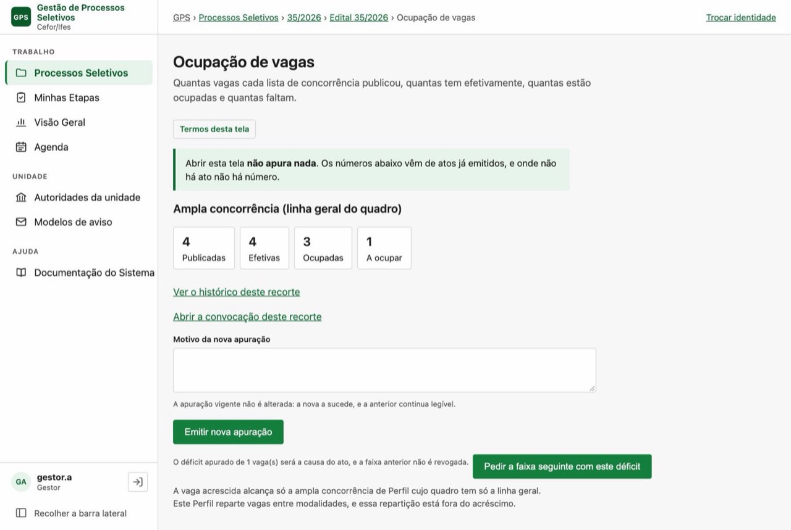
"Quando posso dizer que acabou?"
O GPS não encerra nada sozinho, nem por data nem pelo último ato. O Gestor encerra o Edital, com motivo, num ato irreversível. Antes, a tela lista o que impede: inscrições em curso, prazo recursal em curso, recurso sem decisão, Retificação homologada não publicada. E lista o que só adverte: convocações aguardando resposta, convocações vencidas sem registro, resultado não divulgado, apuração desatualizada.
Vagas podem ficar sem ocupar. Nenhuma regra exige preencher todas antes de encerrar.
Encerrar o Edital tira a seleção do recebimento de inscrições e de Retificações. Ele não fecha a convocação: um Edital encerrado ainda aceita desfecho e envio de documento. Só o encerramento do Processo, que exige todos os seus Editais encerrados ou cancelados, fecha tudo.
Para prestar contas, o Relatório do Edital reúne números, pontos de atenção e documentos oficiais, e a trilha de auditoria guarda cada ato, inclusive os sucedidos.
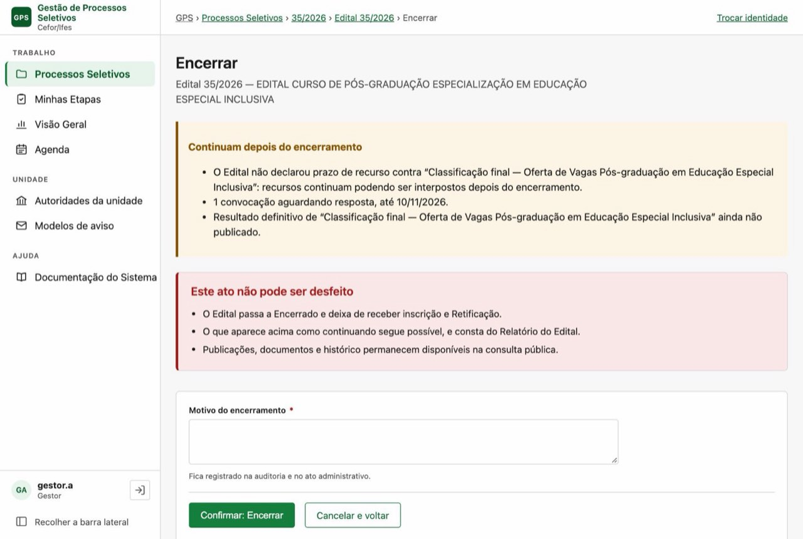
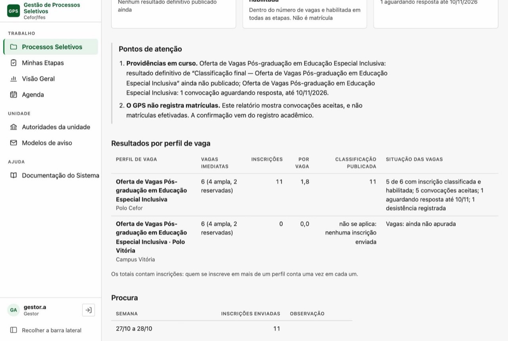
Para quem vai executar. Os caminhos partem de Gestão › Processos Seletivos › Edital; "marco" é o marco classificatório do Perfil.
| Marco | Papel | Pré-requisitos | Caminho e ação | Resultado e onde conferir | Impedimentos comuns |
|---|---|---|---|---|---|
| 1. Criar | Gestor | Unidade registrada e ativa | Processos › Criar: identificação, título, número e ano do 1º Edital | Processo e Edital "em elaboração" | Número/ano já usado |
| 2. Compor | Elaborador | Edital em elaboração | Edital › Compor: Perfis (vagas, modalidades, qual é a ampla, quadro, reversão, forma de convocação), Cronograma, Classificação (marco por sorteio, concurso, instante, normalização, regra de corte), Inscrição (período, documentos) | Etapa "Revisão" sem achados bloqueantes | Quadro não soma; método incompleto; regra de corte sem desfecho de empate; período não designado |
| 3. Homologar e publicar | Elaborador › Homologador › Publicador | Três pessoas, ou ao menos duas | Atos "Submeter", "Homologar", "Publicar", com autoridade signatária | Edital "Publicado", página pública | Segregação; concurso já realizado; extração inviável |
| 4. Inscrições | Candidato | Período aberto | Portal | Gestão › Edital › inscrições | — |
| 5. Congelar | Gestor ou presidência | Inscrições encerradas; extração no dia seguinte ou depois | Marco › Sorteio › "Publicar e congelar a relação", em cada lista | "Relação congelada em…", link para o canal público | Inscrições em curso; concurso já realizado |
| 6. Semente | Gestor ou presidência | Depois da extração | Marco › Sorteio › "Observar a ocorrência N na fonte" | "Material bruto observado" | Caixa fora do ar: clicar de novo |
| 7. Sortear | Gestor ou presidência | Relação congelada; ocorrência observada | Marco › Sorteio › "Realizar o sorteio", em cada lista | "Sorteio realizado", "Verificar no canal público" | Extração anterior ao congelamento |
| 8. Divulgar | Publicador | Ordem vigente; autoridade signatária | Sorteio › "Publicar a classificação" › prévia › natureza › "Publicar este resultado" | Marco › Publicações; página pública | Corte obsoleto; para definitiva, recurso pendente |
| 9. Cortar | Gestor ou presidência | Ordem vigente; regra de corte | Marco › Corte › aba da lista › conferir a prévia › "Emitir corte" | "Geração vigente com N faixas" | Empate na última posição |
| 10. Apurar | Gestor ou presidência | Ordem e linha no quadro | Marco › Ocupação › "Apurar a ocupação deste recorte"; na reservada, se faltar, "Pedir a faixa seguinte com este déficit" e apurar de novo | Publicadas, Efetivas, Ocupadas, A ocupar | Apuração obsoleta |
| 11. Convocar | Gestor ou presidência | Apuração vigente | Marco › Convocação › "Convocar os titulares num ato só"; prazo do cronograma ou data | Cartões em "Chamadas praticadas" | Forma de comunicar não declarada |
| 12. Comunicar | Gestor ou presidência | Convocação praticada | Por publicação: publicar fora e registrar "Onde e quando a lista foi publicada". Por mensagem: "Emitir a comunicação" | Prazo começa a correr | Falha de envio: emitir de novo |
| 13. Conferir | Gestor, presidência ou membro alocado | Documento enviado | Cartão › "Documentos da convocação" › abrir › Conforme / Pendente / Não se aplica | "N de M conferido(s)"; "Pronta para decidir" | "Abra o documento antes de conferi-lo como conforme" |
| 14. Decidir | Gestor ou presidência | Para aceite: obrigatórios conferidos | Cartão › "Registrar desfecho" | Ocupação refeita; candidato vê o resultado | Documentos não conferidos; não atendimento antes do vencimento |
| 15. Chamar o próximo | Gestor ou presidência | Vaga a ocupar | Convocação › "Chamar uma pessoa da fila" | Nova convocação "para vaga que vagou" | Fila esgotada: pedir faixa seguinte |
| 16. Encerrar | Gestor | Sem pendências impeditivas | Edital › "Encerrar", com motivo; depois, Processo › "Encerrar Processo" | Edital "Encerrado"; Relatório de encerramento | Prazo recursal ou recurso em curso |
| Na tela | Significado técnico atual | O que a equipe entendeu | Exemplo do Edital 35 | Risco | Esclarecimento proposto |
|---|---|---|---|---|---|
| Corte | Ato que fixa até onde uma lista avança, calculado só sobre ela | A distribuição final das vagas | Corte PcD diz C6 progride | Emitir ato que contraria o Edital | Mostrar, na lista reservada, quem ocupa pela ampla, antes de emitir |
| Faixa / geração | Faixa é um trecho alcançado; geração é o conjunto das faixas vigentes | Sinônimos, ou uma "nova lista" | Ampla: geração com 2 faixas | Confundir continuar com refazer | Mostrar a geração acumulada, não só a faixa inicial |
| Progride | Está dentro de alguma faixa | Tem vaga | C10 progride e é suplente | Chamar suplente de titular | "Progride como titular" / "progride como suplente" |
| Fora da faixa | Ainda não alcançado; não é eliminação | Eliminado | C9 antes da faixa seguinte | Desistir de quem ainda pode ser chamado | "Ainda não alcançado" |
| Suplente | Progride além dos titulares; não ocupa até aceitar | Qualquer um da lista, ou o motivo digitado | Faixa com motivo "Suplente" | Achar que o motivo cria suplência | Separar o campo "motivo" da noção de suplente na tela |
| Ocupadas | Titular sem desfecho de saída, mais suplente que aceitou | Matrícula feita | Ampla 4 de 4 sem convocação | Achar que o processo terminou | "Com titular designado" ou legenda fixa (Q8) |
| Para regularizar | Chamar quem teve documento indeferido | Chamar o próximo da lista | Lista PcD sem corte oferece C6 e C9 | Chamada sem fundamento | Corrigir a lista sem corte; nomear "indeferidos que podem corrigir" |
| Deferimento | Não existe na convocação: há "Conforme" por item e "Pronta para decidir" | Aprovação dos documentos | — | Esperar um ato que não existe | Usar a mesma palavra no guia e na tela |
| Matrícula | Fora do GPS; o aceite "não é matrícula" | Último passo no GPS | "Vaga aceita" de C9 | Encerrar sem confirmar matrícula | Dizer na tela onde a matrícula acontece |
| Habilitados | Todas as inscrições submetidas, quando não há etapa de habilitação | Quem teve documentos aprovados | "Relação de habilitados ao sorteio" | Achar que houve análise | "Participantes do sorteio" |
| Marco | Na configuração: ponto onde nasce uma ordem. Na Agenda: um evento do cronograma | Uma data | "Classificação final" × "Sorteio 05/11" | Procurar a tela errada | Dar nomes diferentes às duas coisas |
| Comunicação enviada | Por publicação: o registro de onde e quando a lista foi publicada | Um e-mail enviado | Página de C9 | Candidato procura e-mail | "Publicada em…" quando a forma é publicação |
| Ordem de protocolo | Ordem alfabética de um protocolo aleatório | Ordem de chegada | Número do sorteio | Suspeita de favorecimento | "Ordem alfabética do protocolo" |
Sem notas. Cada item tem a evidência, a categoria e a menor intervenção que melhora a compreensão. A prioridade segue o risco diante de atos irreversíveis e o tempo que a equipe perdeu.
A orientação · B linguagem · C previsibilidade · D dependências · E prevenção de erros · F próxima ação · G coerência · H segurança administrativa. Só os critérios com fricção observada.
| Etapa | Fricções | Evidência |
|---|---|---|
| Configurar | B, D | Ajuda invisível no campo do concurso; "marco" e "etapa" com dois sentidos; eventos do cronograma sem efeito |
| Congelar e sortear | C, E, H | Atos irreversíveis sem conferência; botão oferecido com recusa certa; três listas, três sorteios |
| Semente | B | Erro técnico cru; 00h00 lido como horário |
| Corte | A, C, G, H | Faixa inicial exibida depois da faixa seguinte; nenhuma menção a quem ocupa pela ampla; dois campos "motivo" de efeitos opostos |
| Ocupação | B, D, F | "Ocupadas" lido como matrícula; reversão silenciosa; apuração da ampla a refazer sem aviso |
| Divulgação | E, G | Natureza pré-marcada; papel separado sem aviso nas telas de recorte |
| Convocação | A, D, G | Regularizáveis sem corte; mesma pessoa em duas filas; convocação visível antes da publicação |
| Conferência e desfecho | F, H | Sem fila própria; desfecho sem correção pela tela; prazo vencido que não age |
| Encerramento | C, G | Edital encerrado que ainda aceita desfecho e documento |
As caixas em amarelo são lacunas: o GPS não tem a resposta, ou este estudo não conseguiu demonstrá-la no caso real.
Peça a uma pessoa de TI e a uma do negócio que percorram, sem ajuda, o Edital 35 na cópia: configurar o sorteio, congelar e observar, distinguir ordem e distribuição, emitir corte e apurar, convocar e registrar uma desistência. Anote onde procuram, onde hesitam antes de clicar e que palavra entendem diferente. Esses pontos valem mais que as respostas certas.